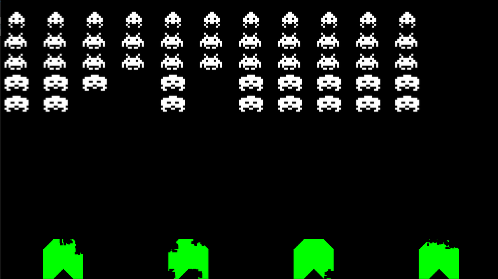
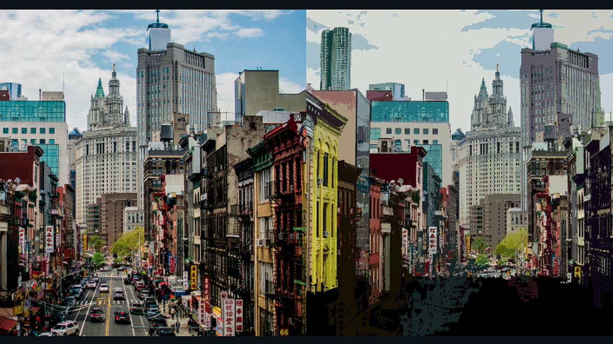
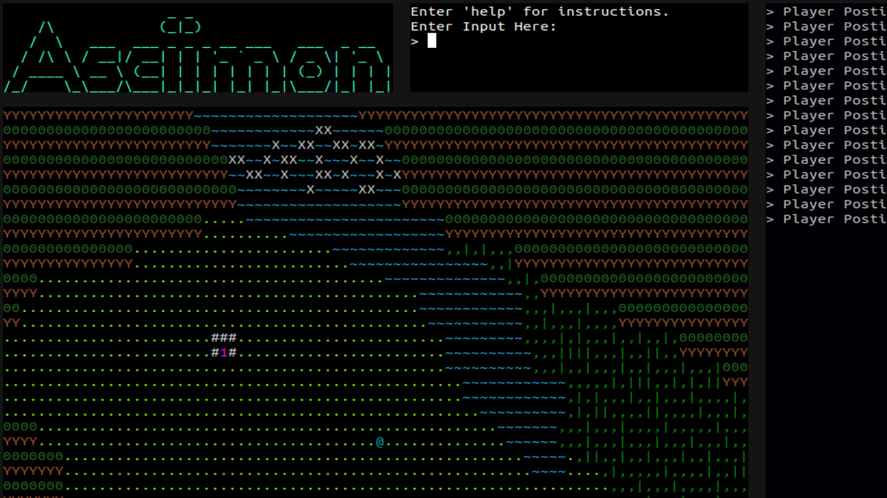
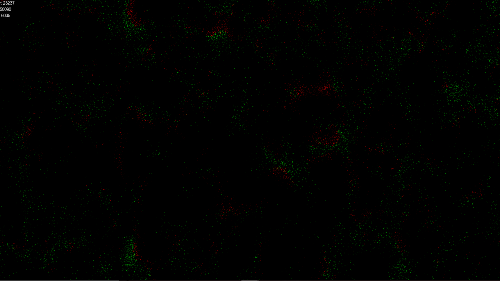
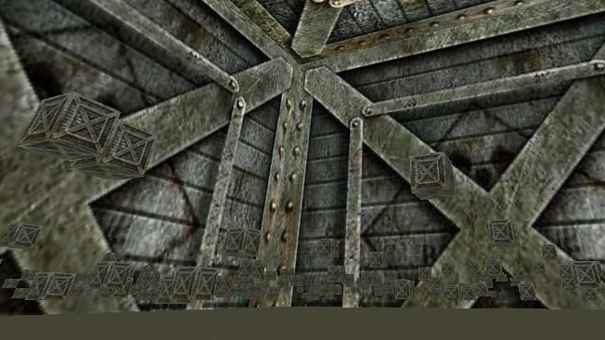
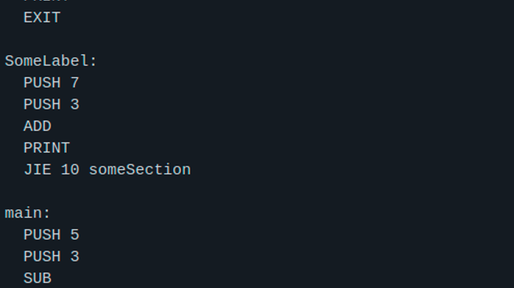
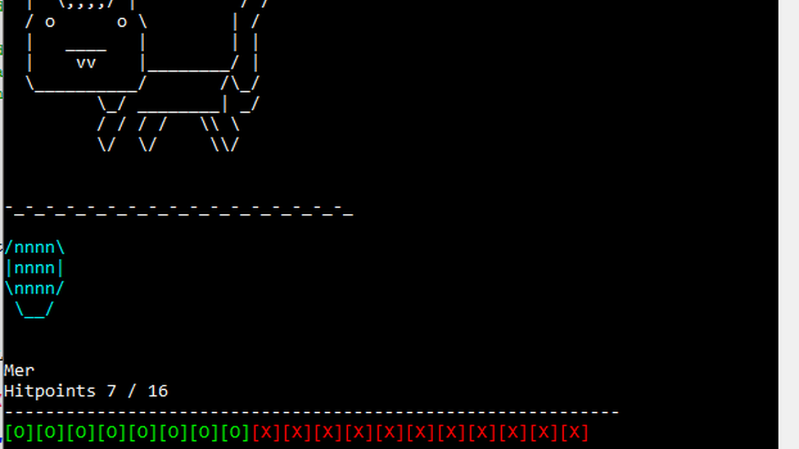
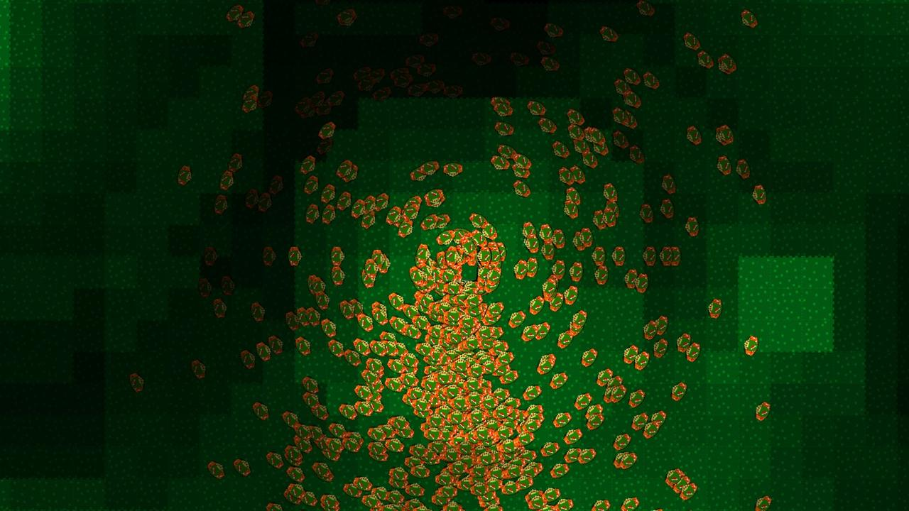
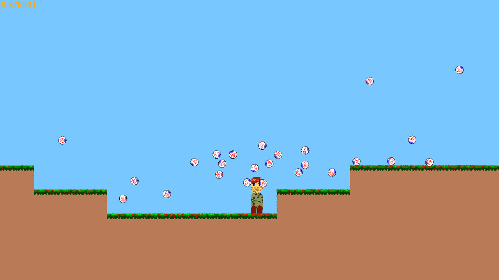

Pong except it is rendered in 3D
At the time I made this I was very into retro-future styles, so I made a pong game attempting to recreate this style. Furthermore, I used this app as way to learn about post-processing effects, and so implemented bloom.
Tags:
Open Builder
December 2019
A voxel multiplayer game that allows players to play and build in the same world, which used the OpenGL API as a rendering backend and ENet for UDP socket communication.
This created for the purpose of learning how to integrate Lua into a C++ application, as well how to create a multiplayer game. Lua gives the ability to add biomes, block types, edit UI, and probably eventually.
Tags:
Converts images into a pixelated form.
The program works by taking the average colour around an area, and then filling that area with that colour.
Tags:
Space Invaders
April 2019
Space Invaders is a 1978 arcade game created by Tomohiro Nishikado. It was manufactured and sold by Taito in Japan under the title Uchū Shinryaku-sha.
This project aimed to recreate that game using SFML.
It features a main menu, the game itself, and a highscore system.

Tags:
Hack Pompy 2018
October 2018
A game created for a weekend long university-ran hackathon that runs anually.
We decided to go full meta, where the idea of the game is you are an organiser of HackPompy2018 and you have to help maintain the satisfaction of the people all by yourself
A playable demo can be found here
Tags:
BALIC stands for "Bad and Lossy Image Compressor". This was mostly made just for fun, which takes an input image and then outputs a sometimes larger lower quality image. Furthermore, it is able to also show the process on a seperate thread.

Tags:
Sort Algorithm Visualiser
September 2018
A sorting algorithm visualiser which features a main menu to select which algorithms to run.
This utilises multi-threading, where one thread handles the updates (eg runs the sort algorithm), and the other thread handles the drawing and updating of the stair case.
It features bubble sort, counting sort, cycle sort, gnome sort, heap sort, insertion sort, iterative merge sort, merge sort, pancake sort, quick sort, radix sort, selection sort, and stooge sort.
Tags:
BALIC stands for "Bad and Lossy Image Compressor". This was mostly made just for fun, which takes an input image and then outputs a sometimes larger lower quality image. Furthermore, it is able to also show the process on a seperate thread.
Tags:
Tags:
An OpenGL wrapper for Rust.
I found the current GL library kind of annoying to use, as you had to write unsafe {} for every single OpenGL command. Furthermore, the function called were not rust like, as the OpenGL API uses function names such as glBindBuffer. This library wraps every function into rust-like functions, so the call to glBindBuffer would become rgl::bind_buffer.
Pokemon-inspired game created using Rust for ANSI terminals
This was my first project using Rust, which similar to the AsciiMon classic game, the rust code acts as an engine meaning that any maps or asciimon added into the game will "just work" without having to edit any of the code
It features a custom "terminal renderer", which splits the terminal into several sections, such as the title, the input section, and the game itself.
The renderer also utilises ANSI escape sequences, which allows it to position the cursor at certain locations, clear the terminal, and support colours.

Tags:
Tags:
Tags:
Conglomerate
January 2018
Tags:
Combines a C++ project into a single .cpp file. (AKA a unity builder)
This is done by sorting the header files by their dependancies (#include directives from this project), and then spitting them out into a .cpp file, and then putting the source files below.
Any local includes are discarded from the output, as they would not be needed in the conglomerate file, but non-local includes are kept.
An example output can be found
IAS Computer Sim
December 2017
Tags:
Tags:
Python Contest Game
December 2017
Tags:
Slonder Man
November 2017
Tags:
Littleman Computer
October 2017
Tags:
Langton's Ant
September 2017
Tags:
Empire was custom cellular automaton (Which technically isn't a cellular automaton but more of a simulation) which aimed to simulate different colonies taking over a "map".
It was based on a classic RPG system, where a colonist would move to random square adjacent to them, and if there was someone from a different colinist then they would fight. The colonist with the higher strength value would survive, and the other one would die.
Each move, the age of the person would decrease but there would be a small chance to produce a child, who would inherit the traits of the parent, such as their strangth value; however they would sometimes mutate, which would increase their strength value.
Tags:
SFML Game Framework
August 2017
Tags:
Simple framework for SFML games.
Features state/Screen system, GUI system, animation, maths helpers, file stuff, and resource management.
Tags:
Predator And Prey
August 2017
My first ever Cellular Automaton.
Predator and prey features two cell types, predator and prey, and each cell is given a health value.
For both types of cell, each step of the simulation means they move in a random direction.
They prey has their health increase each step, and when this reaches a theshold, they will create a new prey and have their health reset to 0.
For predators, their health decreased each step, and when this reaches 0 they die. When they come across a prey their health is increased by the amount the prey had, the the prey will turn into a predator.

Tags:
Minecraft One Week Challenge
August 2017
Inspired by the Minecraft One Week Challenge In Unity 3D by Shane Beck, this project aimed to also attempt that, but instead from scratch using C++ and OpenGL.
This was created mostly for a video, where I describe what I am working on each day. For example, day 1 was setting up OpenGL boilerplate code, and day 2 was getting chunks to render etc.
Tags:
A game based on "Hero" by FaceOS on Scratch. It features running between different zones using a map you can access by walking to a corner sign post on each area.
Each area features a set of monsters to fight, and eventually as you level up you unlock the ability to reach new areas.
(Link to OG Game)
Tags:
Brainf*ck Interpretter
February 2017
Says it on the tin really, just an interpretter for the Brainf*ck langauge.
From Wikipedia: "Brainf*ck is an esoteric programming language created in 1993 by Urban Müller. Notable for its extreme minimalism, the language consists of only eight simple commands and an instruction pointer. While it is fully Turing complete, it is not intended for practical use, but to challenge and amuse programmers. Brainf*ck simply requires one to break commands into microscopic steps."
Tags:
My first ever large(ish) OpenGL project, which was a Minecraft clone. When I started to learn programming, creating a clone of Minecraft was a mini-goal of mine, and a a year bit from starting to learn C++ I eventually did create what is basically "minecraft classic" without a GUI.
This was mostly created an excersise for learning OpenGL, as before this everything was done very simple. The project itself went through multiple iterations as I was learning new things and wanted to structure the project differently. These iterations can be found on my YouTube channel.
It featured world generaiton using perlin noise, and world breaking and modelling. Certain features were added or removed at certain points in time. For example, some iterations had the "Minecraft-like" lighting models, others had infinite height, and others had world saving/ loading.
Tags:
An early OpenGL project created when trying to work out how to build a Minecraft clone. The cubes themselves are rendered individually as at the time I was unaware of creating large meshes or instance rendering techniques.


Tags:
A city building game based on Dot Village, which is a game on Scratch. It featured "days" that would pass, which would look at the current buildings in the city and then update some values, such as coins, population, and resources (eg food, wood, and stone)
The original game can be found
Tags:
Hop Virtual Machine
September 2016
At the time a friend was teaching about how computers actually work, by executing very simple instuctions that contained an opcode and operands.
This programs was to emulate the a very simple machine using a custom instruction set/byte code. It featured 10 commands, (push, pop, add, sub, print, jump, jie, jin, jil, jig, exit), and an "assembler" to convert high level instrucions into the byte code that the VM would understand.
This works by using the fetch, decode, excute model, where the "CPU" will fetch the next instruction based on the instruction pointer location, decode the opcode and operands, and then finally execute the instruction.

Tags:
AsciiMon Classic
July 2016
Pokemon game created using ASCII art. It was implemented as a custom engine, meaning that any maps or asciimon added into the game will "just work" without having to edit any of the C++ code.
It features basic talking scenes, a world to explore, tall grass where you can encounter "asciimon", a battle system. and a leveling up system for the different Asciimon.


Tags:
Kingdom was "game" that was originally supposed to be a "minicraft x stardew valley" combo, but instead ending up being more like an experimental project where I played around with a custom componenet system, that would allow attatching different logic types to entities, eg following the player, or turnng water into ice when stepped on.
Every entity had an std::vector of components, taht are looped through every frame in the update method, after doing any unique logic of a derived entity class first. These components are added in the constructor of any class that is derived by the entity class.
If you are interested, there is a tonne more info in the YouTube/ Github links below the images.


Tags:
A simple shooting game. This was my first time doing a title-map collision detection system, and also implementing a particle system. (Link to original)
It features a little animated army-dressed character who is able to walk around a map. The maps themselves are loaded from a text file with different characters representing tile types, where g = grass, d = dirt, and a space is just air.

Tags:
Faster Than Wind
January 2016
An attempted clone of the game "FTL: Fater than Light". At the time I was very into the game FTL, so I felt like creating my own version would be an interesting challenge. (Link to original)
It features a ship editor, as well as the game itself. The game itself was never finished beyond a main menu screen and a ship selection screen.
Eventually I would like to revisit this project and probably rewrite it.
Tags:
Pyoro Clone
December 2015
A simple clone of the WarioWare game, Pyoro (Link to original)
This was created when racing a friend, who was also creating the same project. At the time, we were both new to using SFML in C++, and so we were giving eachother tips on how to implement certain functionality as we went.
For example, he implemented the fading background, while I developed the extendable tongue.
In total, it took ~14 hours to complete.
Tags:
This was one of my earliest games, created when I was first learning C++. It was also my first time creating classes correctly, as before this I did not really know what they were for.
It was just a simple RPG game where you had the ability to roam around a little world, and then encounter enemies in certain parts where it would transision to an RPG turn-based-style battle system.
Tags: